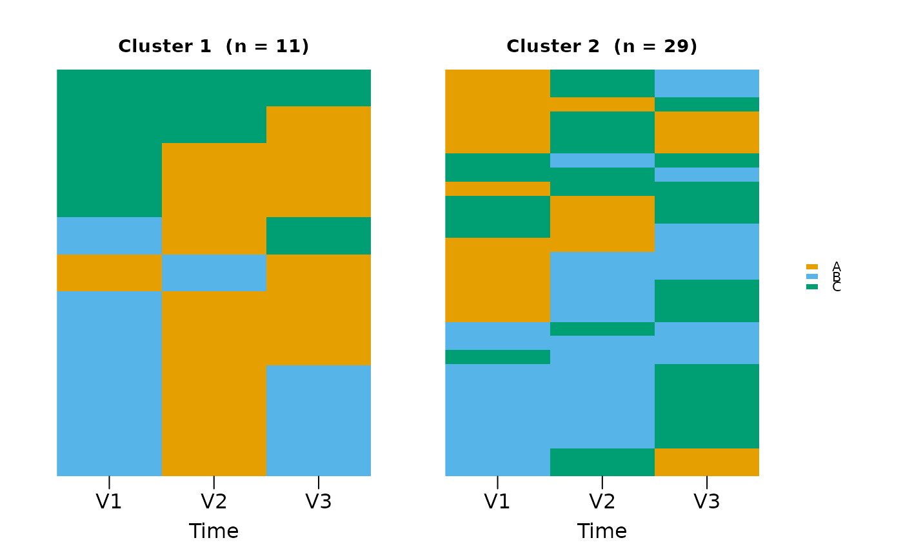

Fits a mixture of Markov chains to sequence data and returns a
netobject_group containing per-cluster transition networks.
This is the MMM equivalent of cluster_network (which uses
distance-based clustering); both functions share the
cluster_by = ... surface argument so the call shape stays
uniform across clustering families.
Usage
cluster_mmm(
data,
k = 2L,
n_starts = 50L,
max_iter = 200L,
tol = 1e-06,
smooth = 0.01,
seed = NULL,
covariates = NULL,
cluster_by = "mmm",
...
)Arguments
- data
A data.frame (wide format),
netobject, ortnamodel. For tna objects, extracts the stored data.- k
Integer. Number of mixture components. Default: 2.
- n_starts
Integer. Number of random restarts. Default: 50.
- max_iter
Integer. Maximum EM iterations per start. Default: 200.
- tol
Numeric. Convergence tolerance. Default: 1e-6.
- smooth
Numeric. Laplace smoothing constant. Default: 0.01.
- seed
Integer or NULL. Random seed.
- covariates
Optional. Covariates integrated into the EM algorithm to model covariate-dependent mixing proportions. Accepts formula, character vector, string, or data.frame (same forms as
build_clusters). Unlike the post-hoc analysis inbuild_clusters(), these covariates directly influence cluster membership during estimation. Requires the nnet package.- cluster_by
Character. Accepted only as
"mmm"(the default). Present socluster_mmm()andcluster_network()share the same call shape; any other value raises an error pointing atcluster_network.- ...
Reserved for forward compatibility with the unified
cluster_*surface. Currently unused.
Value
A netobject_group (list of netobjects, one per
cluster). MMM-specific information is stored in
attr(, "clustering") (class "net_mmm_clustering"):
- assignments
Integer vector of cluster assignments.
- k
Number of clusters.
- posterior
N x k matrix of posterior probabilities.
- mixing
Mixing proportions.
- quality
List with AvePP, entropy, classification error.
- BIC, AIC, ICL
Model fit statistics.
- data
The full N-row sequence frame, matching
$assignments– sosequence_plotanddistribution_plotcan recover both.
Details
For the full net_mmm object with posterior probabilities, model
fit statistics, and S3 methods, use build_mmm instead.
See also
build_mmm for the full MMM object,
cluster_network for distance-based clustering
Examples
seqs <- data.frame(V1 = sample(c("A","B","C"), 30, TRUE),
V2 = sample(c("A","B","C"), 30, TRUE))
grp <- cluster_mmm(seqs, k = 2, n_starts = 1, max_iter = 10, seed = 1)
grp[[1]]$weights
#> A B C
#> A 0.1089275 0.8624067 0.02866584
#> B 0.4564744 0.4564744 0.08705128
#> C 0.1384553 0.5770726 0.28447209
attr(grp, "clustering")$assignments
#> [1] 1 2 1 2 1 1 1 1 1 1 1 2 1 1 1 1 1 1 2 1 1 1 1 1 1 1 1 1 1 1
# \donttest{
# Visualise with sequence_plot
seqs <- data.frame(
V1 = sample(LETTERS[1:3], 40, TRUE),
V2 = sample(LETTERS[1:3], 40, TRUE),
V3 = sample(LETTERS[1:3], 40, TRUE)
)
grp <- cluster_mmm(seqs, k = 2)
sequence_plot(grp, type = "index")

# }